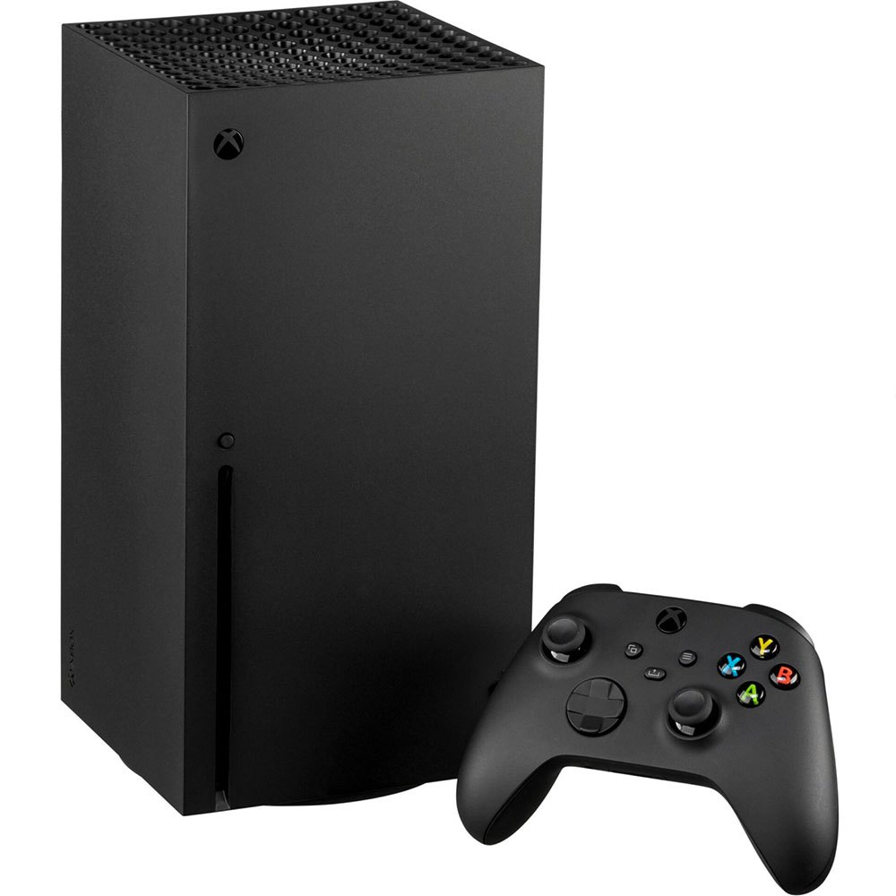
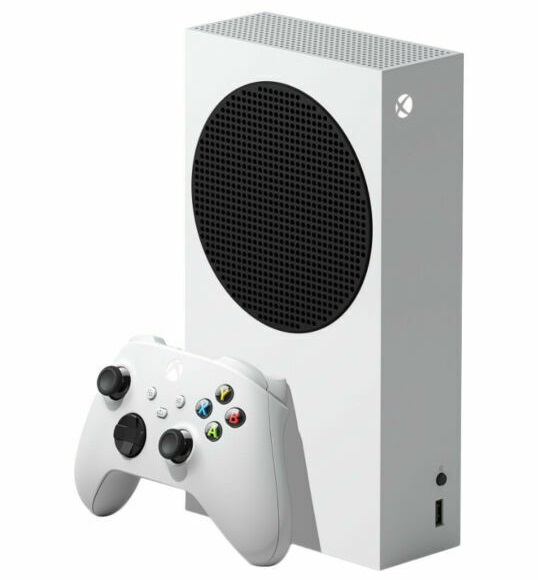

Xbox Series X/S
Консоль нового поления от компании Microsoft, поставляется в двух вариантах — Series X и Series S

Xbox Series X
- Центральный процессор -
- AMD Zen 2 с 8 ядрами и 16 потоками, с частотой 3,8 ГГц
- Графический процессор -
- AMD Radeon Navi с поддержкой трассировки лучей и разрешения до 4K, с частотой 1,825 ГГц и 52 вычислительныеми наборами (CU)
- Постоянная память -
- SSD на 1 Тбайт
- Оперативная память -
- 16 ГБ (GDDR6)

Xbox Series S
- Центральный процессор -
- AMD Zen 2 с 8 ядрами и 16 потоками, с частотой 3,6 ГГц
- Графический процессор -
- AMD Radeon Navi с поддержкой разрешения до 1444p, с частотой
1,565 ГГц и 20 вычислительными наборами (CU) - Постоянная память -
- SSD на 512 Гбайт
- Оперативная память -
- 10 ГБ (GDDR6)
Какую версию выбрать?
Главными отличиями двух версий консолей является намного меньшая производительность Series S по сравнению с Series X. Наиболее это заметно в плане видеокарты - она у S версии в три раза менее производительна, чем у X версии. Также Series S не поддерживает оптические носители, а значит все игры придется хранить в SSD самой приставки, при этом объем памяти в два раза меньше, Series X.
Учитывая все это, а также то, что Series S примерно в два раза дешевле старшей модели, можно сказать, что S версия подойдет тем, кто нетребователен к графике и платить слишком много, за возможность поиграть в новые игры.